Тема практической работы: «Выполнение операции с разными системами счисления».
Цель: обучение операциям перевода из двоичной, восьмеричной и шестнадцатеричной систем счисления в десятичную и наоборот; арифметическим действиям в двоичной, восьмеричной и шестнадцатеричной систем счислениям.
Оборудование: интерактивная доска для демонстрации компьютера учителя.
Ход занятия:
Актуализация знаний
Изложение нового материала
Сегодня на занятии мы научимся осуществлять переводы из десятичной системы счисления в двоичную, восьмеричную, шестнадцатеричную и наоборот, а также производить арифметические операции над данными системами.
Для начала вспомним, какие цифры могут использоваться в самых распространенных системах счисления, а именно, в двоичной, восьмеричной, десятичной и шестнадцатеричной.
Таблица 1 – Цифры, входящие в разные системы счисления
|
Название системы счисления |
Входящие цифры |
Примеры |
|
Двоичная |
0, 1 |
101112; 11,1012 |
|
Восьмеричная |
0, 1, 2, 3, 4, 5, 6, 7 |
2358; 12,78 |
|
Десятичная |
0, 1, 2, 3, 4, 5, 6, 7, 8, 9 |
92310; 189,510 |
|
Шестнадцатеричная |
0, 1, 2, 3, 4, 5, 6, 7, 8, 9, A, B, C, D, E, F |
12AC16; 35,F16 |
Подстрочным индексом рядом с числом пишется основание системы счисления. Наибольшая цифра, входящая в систему счисления на один меньше названия системы счисления. Например, если система счисления называется пятеричной, то самая большая цифра, которая будет в таком числе равна 4. Такая ситуация получается, что система счисления показывает количество цифр, которые могут входить в систему счисления, а 0 входит в расчет. Для пятеричной системы счисления это 5 цифр (0, 1, 2, 3 и 4). Данное правило работает и для других позиционных (число зависит от месторасположения цифры в нем) систем счисления.
Чтобы получить из целого числа в десятичной системе счисления число в любой системе счисления, нужно делить десятичное число на основание нужно системы счисления до тех пор, пока полученное число не войдет в новую систему счисления. В таком случае, чтобы перевести из десятичной системы в двоичную необходимо делить нужное число на 2 до тех пор, пока не останется остаток, равный 1.
Рассмотрим примеры получения из целого числа, записанного в десятичной системе счисления, число в двоичной, восьмеричной и шестнадцатеричной системах счисления.
Задание 1. Переведите число 6310 из десятичной системы счисления в двоичную.
Решение
Будем делить сначала заданное, а затем и полученные числа на 2 до тех пор, пока не получим 1. Вот такой результат получим:
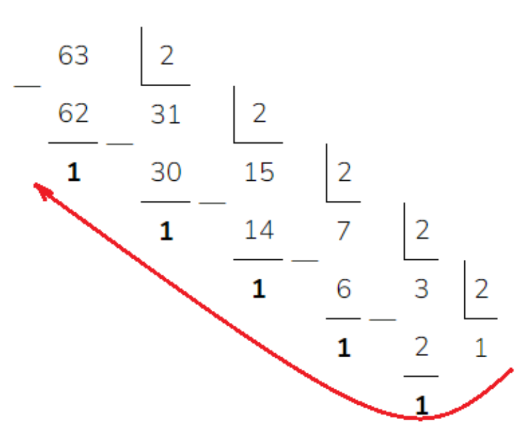
Ответ к данному задания нужно записывать в обратную сторону, т.е. с последнего полученного частного, а затем все остатки от деления в обратную сторону.
Ответ: 6310 = 1111112
Задание 2. Переведите число 12710 из десятичной системы счисления в восьмеричную.
Решение
Делим заданное число на 8 до тех пор, пока не получим число, входящее в восьмеричную систему счисления. Вот такой результат получим:
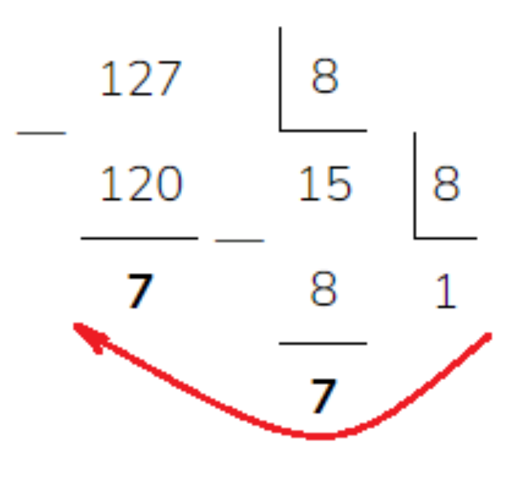
Ответ: 1778
Задание 3. Переведите число 45910 в шестнадцатеричную систему счисления.
Решение
Для перевода из целого числа из десятичной системы счисления в шестнадцатеричную необходимо делить заданное число на 16. При этом следует учесть, что если получим остаток равный 15, то нужно писать F, если 14 – то E, 13 – D, 12 – C, 11 – B, 10 – A. Вот такой результат получим
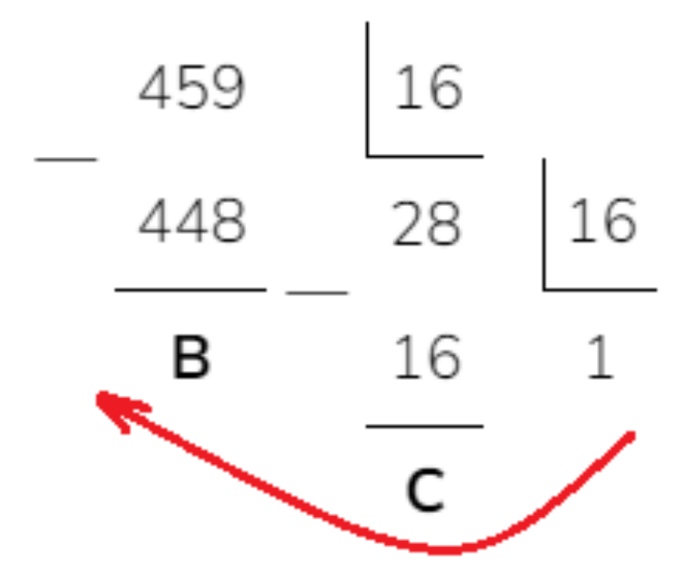
459 – 448 = 11, поэтому записали B.
28 – 16 = 12, поэтому записали С.
Ответ: 1СВ
Таким же образом можно перевести любое целое число в десятичной системе счиления в число любой другой системы счисления.
Рассмотрим возможности перевода из двоичной системы и восьмеричной системы в десятичную.
Задание 1. Переведите целое двоичное число 10112 в десятичное.
Решение
Чтобы целое число перевести из любой системы счисления в десятичную необходимо выполнить следующие действия:
Выполним перевод:
3 2 1 0 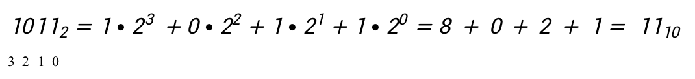
Ответ: 1110
Задание 2. Переведите восьмеричное число 2358 в десятичное.
Решение
Расставим разряды под восьмеричным числом и выполним перевод:
2 1 0
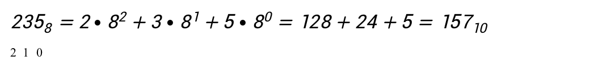
Ответ: 15710
Таким же образом можно будет перевести целое число из любой системы счисления в десятичную.
Чтобы перевести из двоичной системы в восьмеричную или шестнадцатеричную можно сначала перевести из двоичной в десятичную, а только после этого из десятичной системы, путем деления на нужное основание, получить число в восьмеричной или шестнадцатеричной системе счисления.
Чтобы облегчить процесс перевода из двоичной системы счисления в восьмеричную можно воспользоваться следующей таблицей (Таблица 2):
Таблица 2 – Таблица перевода из двоичной системы счисления в восьмеричную и наоборот
|
Цифра в восьмеричной системе счисления |
Двоичное представление |
Цифра в восьмеричной системе счисления |
Двоичное представление |
|
0 |
000 |
4 |
100 |
|
1 |
001 |
5 |
101 |
|
2 |
010 |
6 |
110 |
|
3 |
011 |
7 |
111 |
Задача 1. Переведите число 101011110112 из двоичной системы в восьмеричную и шестнадцатеричную.
Решение
Чтобы перевести целое число из двоичной системы счисления в восьмеричную необходимо, двигаясь справа налево, отделять по три двоичных цифры. Если останется количество цифр меньше трех, то нужно будет поставить недостающее количество нулей слева. Результат будет выглядеть следующим образом:
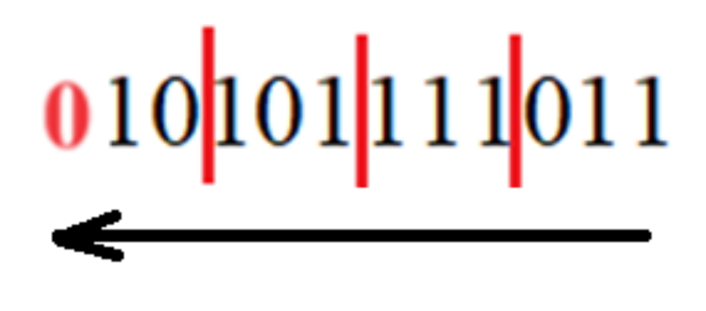
Опирясь на таблицу 2, определим какое восьмеричное число соотвествует триадам двоичной записи.
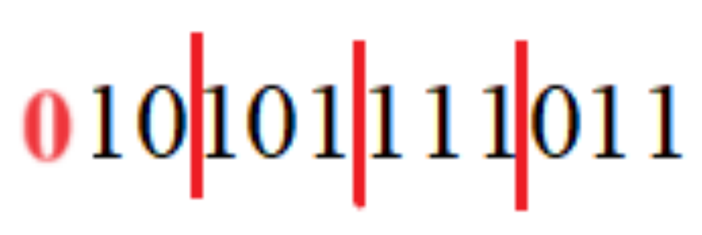
2 5 7 3
Запишем слева направо полученные числа в ответ.
Ответ: 25738
Задание 2. Переведите число 71238 из восьмеричной системы счисления в двоичную.
Решение
Для каждой цифры восьмеричного числа запишем соотвествующую двоичную триаду.
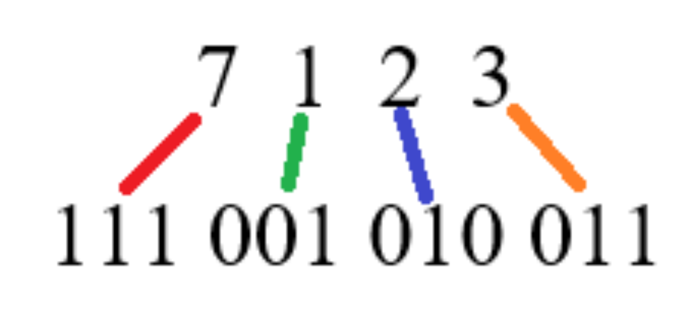
Запишем слева направо полученные числа в ответ.
Ответ: 1110010100112
Чтобы облегчить процесс перевода из двоичной системы счисления в восьмеричную можно воспользоваться следующей таблицей (Таблица 3):
Таблица 3 – Таблица перевода из двоичной системы счисления в шестнадцатеричную и наоборот
|
Цифра в шестнадцатеричной системе счисления |
Двоичное представление |
Цифра в шестнадцатеричной системе счисления |
Двоичное представление |
|
0 |
0000 |
8 |
1000 |
|
1 |
0001 |
9 |
1001 |
|
2 |
0010 |
A |
1010 |
|
3 |
0011 |
B |
1011 |
|
4 |
0100 |
C |
1100 |
|
5 |
0101 |
D |
1101 |
|
6 |
0110 |
E |
1110 |
|
7 |
0111 |
F |
1111 |
Задание 1. Переведите число 101111011102 из двоичной системы счисления в шестнадцатеричную.
Решение
Чтобы перевести целое число из двоичной системы счисления в шестнадцатеричную необходимо, двигаясь справа налево, отделять по четыре двоичных цифры. Если останется количество цифр меньше четырех, то нужно будет поставить недостающее количество нулей слева. Результат будет выглядеть следующим образом:
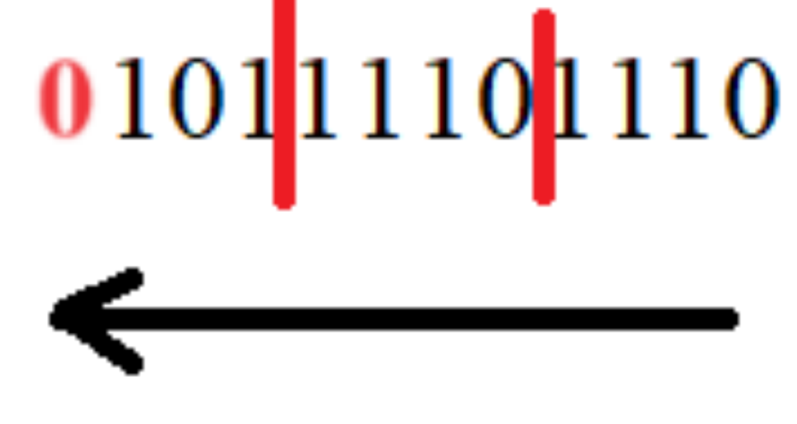
Опирясь на таблицу 3, определим какое шестнадцатеричное число соотвествует тетрадам двоичной записи.
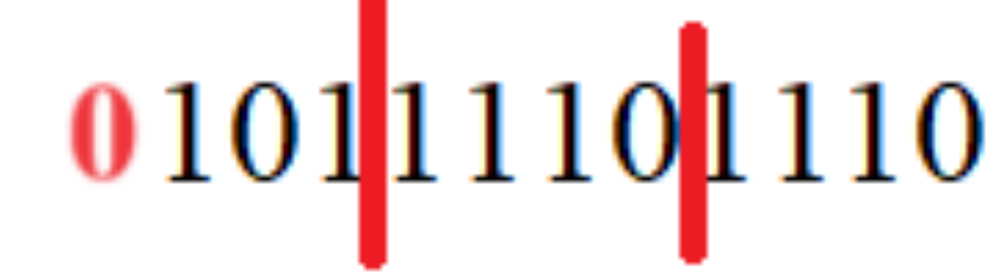
5 Е Е
Запишем слева направо полученные числа в ответ.
Ответ: 5ЕЕ16
Перевод чисел из шестнадцатеричной системы счисления в двоичную осуществляется также как и перевод из восьмеричной системы счисления в двоичную, но с применением таблицы 3.
Во всех позиционных системах счисления можно производить такие же арифметические операции, как и в десятичной ситеме счисления, а именно, складывать, вычитать, умножать и делить.
Задание 1. Сложить два целых числа 1101102 и 11102 в двоичной системе счисления.
Решение
Чтобы сложить два числа необходимо записать их в столбик по принципу меньшее под большим, а далее произвести сложение, опираясь на правила поразрядного сложения:
0 + 0 = 0
0 + 1 = 1
1 + 0 = 1
1 + 1 = 10 (1 переходит в следующий более старший разряд)
В результате получим:
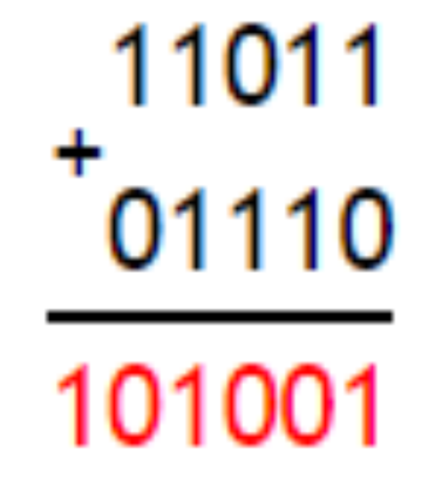
Ответ: 1010012
Для других систем счисления сложение выглядит подобным образом
Задание 2. Сложить два числа 178 и 68
Решение
Чтобы сложить два числа в восьмеричной системе счисления необходимо расписать полученные числа на следующим образом:
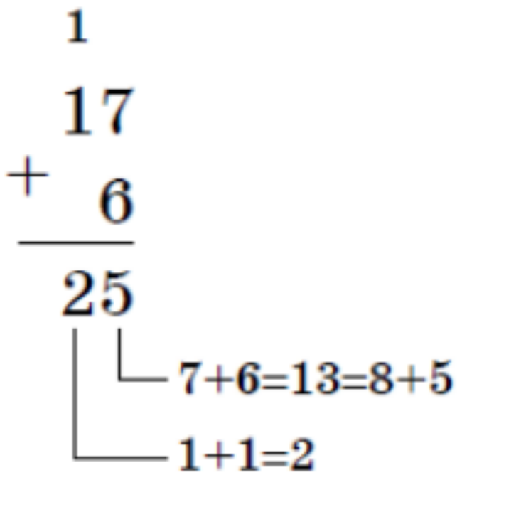
Ответ: 258
Задание 3. Найти разность двух двоичных чисел 101012 и 10112.
Решение
Чтобы найти разность двух двоичных чисел необходимо записать их в столбик по принципу меньшее под большим, а далее произвести вычитание, опираясь на правила поразрядного вычитания:
0 - 0 = 0
0 - 1 = 1 (занимаем 1 из страшего разряда)
1 - 0 = 1
1 - 1 = 10
В результате получим:
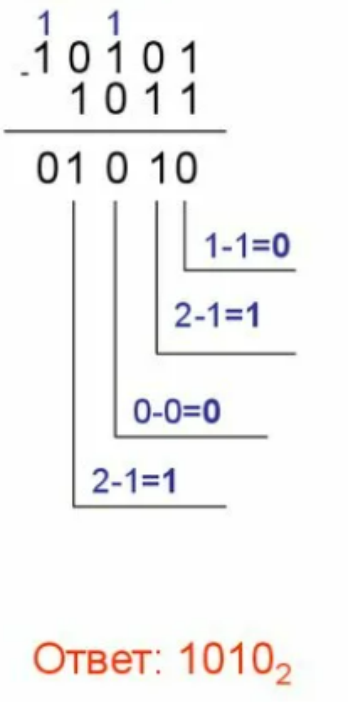
Ответ: 10102
Задание 4. Найти разность шестнадцатеричных чисел: С9416 и 3ВС16.
Решение
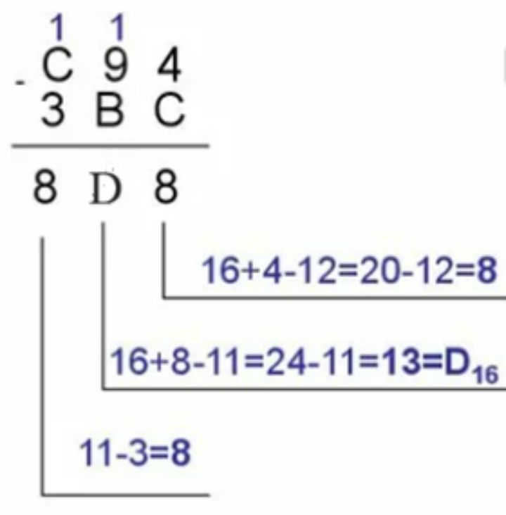
Ответ: 8D816
Задание 5. Выполните умножение двоичных чисел 110112 и 11012.
Решение
Произведем умножение каждой цифры первого множителя на каждую цифру второго множителя. Умножаем, используя таблицу поразрядного сложения:
0 * 0 = 0
0 * 1 = 0
1 * 0 = 0
1 * 1 = 1
А затем сложим:
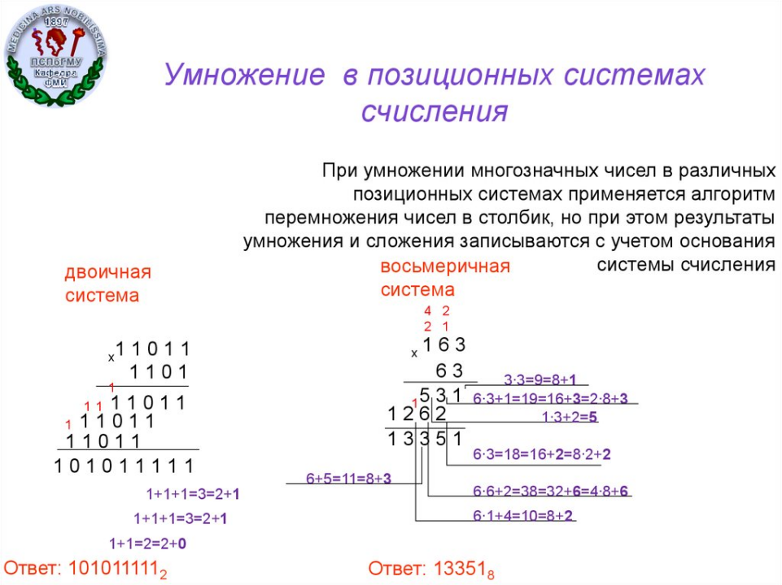
Ответ: 1010111112
Задание 6. Выполните умножение восьмеричных чисел 1638 и 638.
Решение
Ответ: 133518
Задание 7. Выполните деление 1000112 на 11102
Решение
Деление выполяется также как стандартное деление в столбик в десятичной системе счисления:
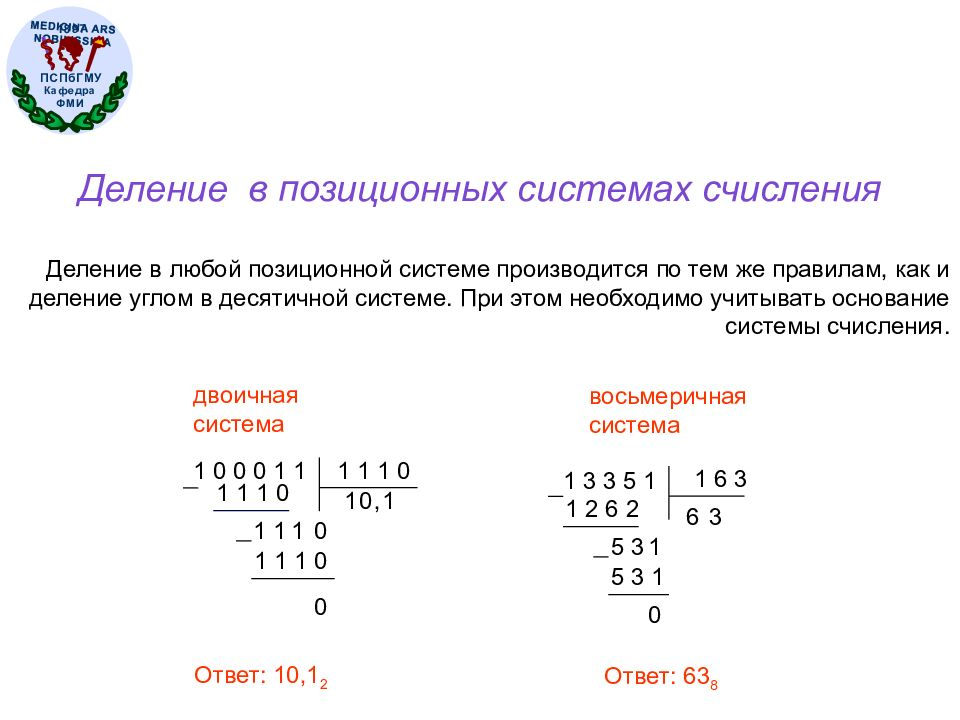
Ответ: 10,12
Задание 8. Выполните деление 133518 на 1638.
Решение
Ответ: 638
Вопросы и задания для самоконтроля